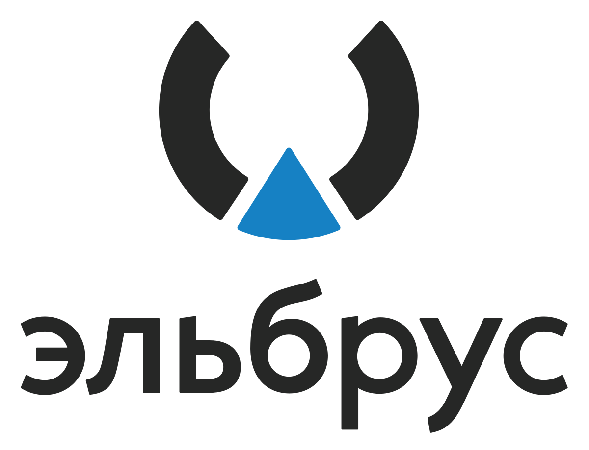

Иностранные производители, выпускавшие для России отечественные процессоры линеек «Байкал» и «Эльбрус», отказались отправлять в Россию уже произведенные чипы. Как пишет РБК, об этом сообщил глава Минцифры Максут Шадаев. По его словам, это повлекло за собой падение объемов производства техники, построено на отечественных CPU. Он не уточнил, сколько процессоров по вине иностранных партнеров не могут попасть в Россию, а также не назвал компанию, которая ответственна за это. Однако известно, все современные «Байкалы», равно как и «Эльбрусы», выпускала компания TSMC. Это тайваньское предприятие, являющееся крупнейшим в мире контрактным вендором микросхем с 56-процентной долей рынка (II квартал 2022 г., статистика Counterpoint Research). В конце февраля 2022 г. TSMC поддержала антироссийские санкции США и полностью прекратила выпуск отечественных процессоров. На 19 декабря 2022 г. к возобновлению производства компания не была готова. Кроме того, как сообщили CNews собеседники в российской ИТ-индустрии, к лету 2022 г. она не собиралась возвращать своим российским клиентам деньги за невыполненные заказы.
Компания МЦСТ рассматривает возможность переноса производства процессоров «Эльбрус» из Тайваня в Россию, пишет РБК. Разработчик ведет переговоры с компанией «Микрон», называющей себя «чипмейкером №1 в России». Как сообщил РБК замгендиректора по маркетингу МЦСТ Константин Трушкин, у компании есть планы по запуску производств процессоров в Зеленограде. Представители «Микрона» на момент публикации материала не подтверждали и не опровергали информацию о переговорах с МЦСТ. Выпуск процессоров «Эльбрус» полностью прекратился в конце февраля 2022 г. Их производство базировалось на мощностях тайваньской компании TSMC – крупнейшего в мире контрактного вендора чипов. TSMC отказалась от сотрудничества с МЦСТ в рамках антироссийских санкций и под давлением властей США. Точно так же она поступила с «Байкал электроникс» (производитель CPU серии Baikal), а в мае 2020 г. в аналогичной ситуации оказалась китайская Huawei со своими чипами Kirin.
Входящие в состав «Росатома» структуры после продолжительных переговоров наконец договорились о приобретении разработчика процессоров «Эльбрус» компании МЦСТ, сообщает «Коммерсант». По данным источников издания, покупка осуществляется по поручению правительства, поскольку то стремится сохранить разработчика, оказавшегося в сложной ситуации, в том числе из-за иностранных санкций. Владельцем 100 % акций МЦСТ станет входящая в состав «Росатома» структура НПО «Критические информационные системы» (НПО КИС). МЦСТ, занимающаяся разработкой процессоров «Эльбрус», осенью прошлого года попала в SDN-перечень Министерства торговли США наряду с другими отечественными дизайн-центрами. Впрочем, об интересе «Росатома» к приобретению МЦСТ информация появилась ещё в конце 2021 года, а НПО КИС появилось только в октябре 2022 года. Сейчас НПО, по данным источников, «интересуется разными активами», хотя достоверной информации о закрытых сделках пока нет. По имеющимся данным, переговоры «Росатома» о покупке МЦСТ начали вести ещё летом позапрошлого года, но на тот момент владельцы компании запросили за неё слишком большую сумму. Хотя сам «Росатом» был «умеренно заинтересован» в покупке, власти уже тогда рассматривали госкорпорацию на роль структуры, способной спасти важный актив.
Сбербанк провел тестирование двух типов серверов на «Эльбрусах» и, несмотря на определенное приятное удивление, все же заключил, что в нынешнем виде их использование в организации совершенно исключено в силу их технического несоответствия. На тестирование банку МЦСТ предоставила «железо» на «Эльбрусах-8С», хотя на своем сайте компания пишет, что уже с 2020 г. серийно выпускает серверные чипы следующего поколения «Эльбрус-8СВ».
Технические выводы достаточно простые: очень слабо для сравнения с Intel Xeon — мало памяти, медленная память, мало ядер, мало частоты. Функциональные требования катастрофически не выполнены», — сообщил он. По его словам, даже близко не может идти речи об эксплуатации в банке предоставленных на тестирование серверов.
"Росатом" обсуждает приобретение контрольного пакета акций российского разработчика процессоров "Эльбрус" АО МЦСТ, сообщили "Коммерсанту" источники на рынке микроэлетроники, весь МЦСТ при этом оценивается в пределах 5-7 млрд рублей. По словам источников издания, инициатор сделки - правительство, недовольное показателями работы МЦСТ. Госкорпорация уже провела due diligence и "готовится к началу сделки", говорят собеседники газеты на рынке. Источник в правительстве это подтвердил и уточнил, что решение о покупке будет принято на ближайшем заседании совета директоров "Росатома", которое пройдет до конца года. Гендиректор МЦСТ Александр Ким назвал сообщения о возможной сделке "всего лишь слухами". Его заместитель Константин Трушкин заявил, что о сделке ничего не знает, но отказался назвать акционеров АО. В "Росатоме" от комментариев отказались. По данным "СПАРК-Интерфакс", МЦСТ было учреждено в 1992 году, уставный капитал компании составляет 3 млн рублей, 99,88% акций АО у "граждан РФ", еще 0,08% - у Института точной механики и вычислительной техники им. С.А. Лебедева РАН (ОАО ИТМИВТ), 0,04% - у ОАО "НИИ супер-ЭВМ".